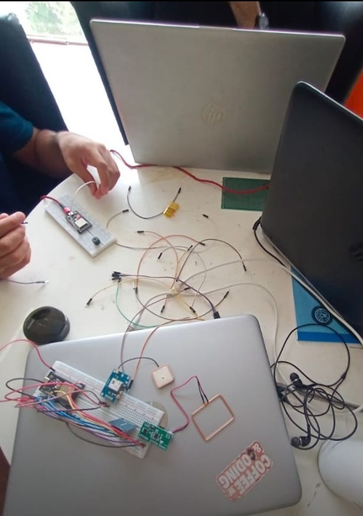
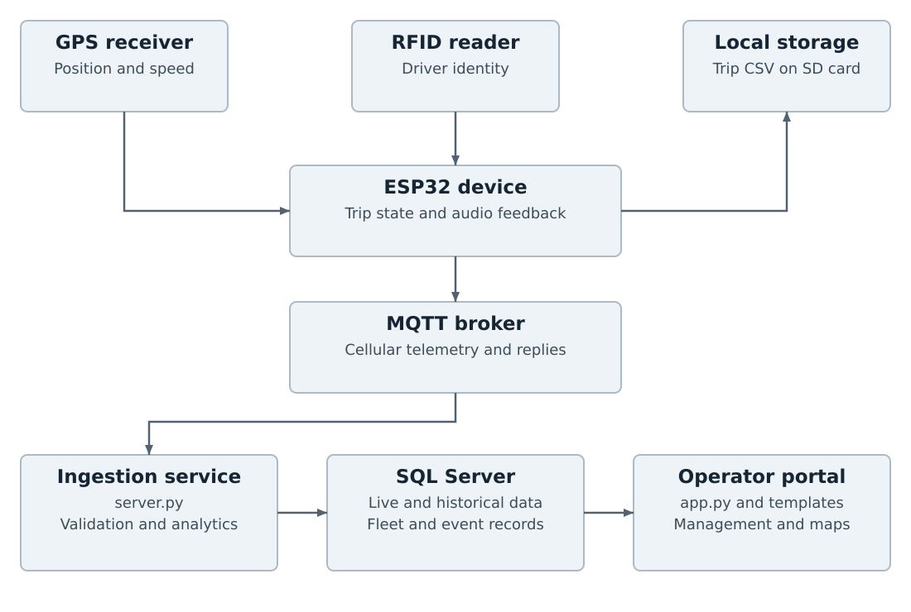

Capture
GPS position and speed, RFID driver identity and device feedback.
Connecting the device in the vehicle to the people managing the fleet.
As lead developer within a team, I worked across hardware integration, telemetry processing and the operator dashboard during my RDC and HIT internships.

Vehicle location alone does not explain who drove, which journey a point belongs to, or which records an operator needs next. The project linked driver identification and trip logging with a shared fleet management interface.
The device workflow includes local trip files for interrupted connectivity, while the backend separates live positions from historical journeys.
GPS position and speed, RFID driver identity and device feedback.
Cellular MQTT paths for live telemetry, trip batches and replies.
Python services for validation, persistence and event analysis.
Fleet records, map views, maintenance and configurable zones.


Connected the embedded platform with GPS, RFID, cellular communication and the trip logging workflow.
Built processing paths for live data and completed trips, supported by SQL Server records.
Developed fleet management views, tracking interfaces, maintenance functions and geofence configuration.
Implemented polygon checks and rule-based speed and harsh-driving detection.
The revised 14-page report covers objectives, architecture, hardware, operation, data design, dashboard evidence, software checks and an acceptance plan. It distinguishes implemented features from performance targets that still need measurement.
Have an embedded or IoT project in mind?
Let’s talk